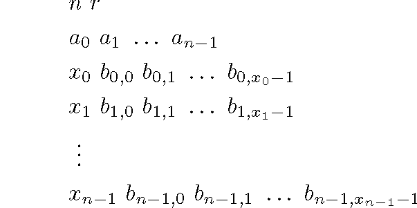
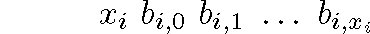
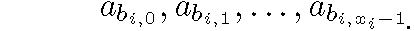

Problem E
Alice is given a list of integers by Bob and is asked to generate a new list where each element in the new list is the sum of some other integers in the original list. The task is slightly more involved, as Bob also asks Alice to repeat this several times before giving him the result. Help Alice automate her task.
Program Input
The first line of the input is t (1 ≤ t ≤ 10), the number of cases to follow. Each case is in the following format:
Each case begins with the integer n (1 ≤ n ≤ 50), which is the number of elements in the list of integers that Alice is given. The integer r (1 ≤ r ≤ 109) is the number of times these operations are to be repeated on a list before returning the result. The values are the nonnegative integers in the original list. Then n lines follow that define how Alice will generate a new list from a previous one. Each of these lines are in the form:
This line defines the value of the ith element in the new list to be the sum of elements:
Program Output
The output consists of t lines, one line for each test case listing the final list of integers modulo 1000 in the form:
c0 c1 . . . cn-1
Sample Input & Output
INPUT
2
2 2
1 2
2 0 1
1 1
2 4
507 692
2 0 1
1 1
OUTPUT
5 2
275 692
Calgary Collegiate Programming Contest 2008